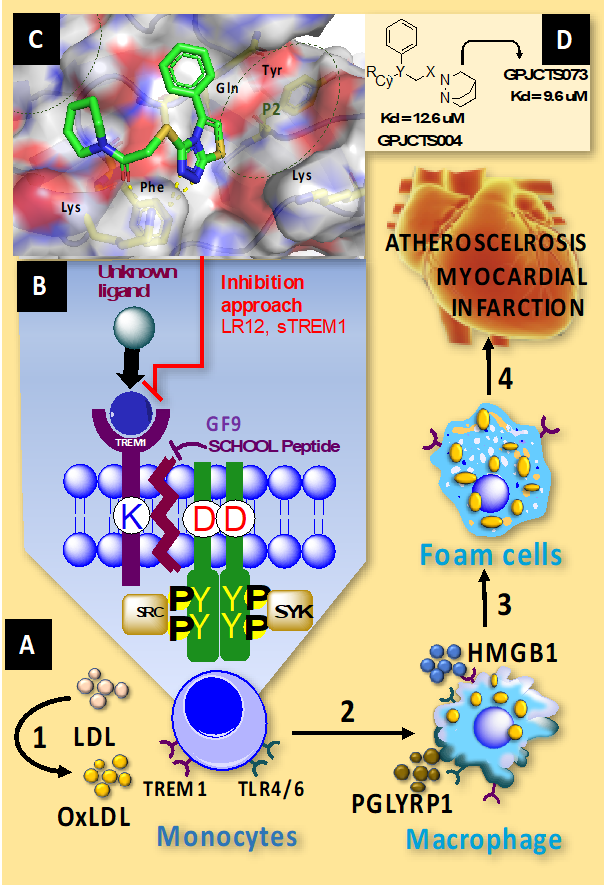

Background and Significance:
With huge number of mortalities each year and even after spending billions of dollars annually, cardiovascular diseases (CVDs) are leading as death causing diseases of the world1, 2. Nearly, 647,000 Americans die from CVDs each year and it is going to be huge threat of mortalities globally for next 15 years2. Current treatments show benefit but do not modify disease progression therefore, there is a critical need to identify new drugs based on novel target(s) that are amiable to manipulate to alter the progression of CVDs. Myocardial infarction (MI) or acute myocardial infarction (AMI) occur predominantly as a result of acute atherosclerotic plaque erosion and rupture that skew monocytes and trigger clotting cascade to develop coronary occlusion. Moreover, during atherosclerosis arterial wall are thicken and lose their elasticity in the progression of coronary artery and cerebrovascular diseases3. Recent studies where the direct relationship between serum concentration of soluble TREM1 is correlated to severity of CVDs indicated crucial role of TREM1 in the initiation of atherosclerotic lesions and development to MI. Interventions in TREM1 expression has made few important observations as: (i) pharmacological blockade of TREM1 attenuates inflammation and increases survival rate in mice with sepsis4, 5, (ii) TREM1 expression inhibition in pigs with acute MI restricts ventricular dysfunction and reperfusion injury6, 7, and (iii) the genetic negation of TREM1 in Apoe-/-/Trem1-/- mice and its pharmacological blockade in Apoe-/- mice significantly alters monocyte recruitment into atherosclerotic lesions, reduces the development of atherosclerosis and plaque formation6. Proposed project hypothesis thus confers synthesis of novel TREM1 inhibitors to subvert and treat CVDs. This is rationalized by the fact that TREM1 is upregulated under inflammatory conditions and induces proinflammatory cytokines expression.
In systemic circulation TREM1 skews myelopoiesis towards more monocytes formation. In monocytes, a transmembrane receptor TREM1 upon activation by its ligands such as peptidoglycan recognition protein-1 (PGLYRP1) and/or high-mobility group box protein-1 (HMGB1) or lipopolysaccharide (LPS), recruit DAP12 via electrostatic interaction between (-) Asp in DAP12 and (+) Lys in TREM1. This interaction triggers SRC-tyrosine kinases and spleen tyrosine kinases (SYK) phosphorylation cascades involving activation of transcription factors, including NFB, which transcrib genes that encode cytokines, chemokines and cell-surface molecules. TREM1 acts in synergism with toll like receptors (TLR) to produce a variety of inflammatory mediators like interleukins (ILs) and tumor-necrotic factor (TNF)-α5, 8.
In atherosclerotic lesions (Figure 1) monocytes due to TREM1 upregulation are transmigrated to intima where they are exposed to oxLDL. Here PGLYRP1 (from neutrophils) or HMGB1(from macrophages) binding to TREM1 activates monocytes to increase oxLDL uptake and promotes foam cell formation. An atherogenesis induced NFB activation are translocated into nuclei of macrophages9, 10. This proposal, will focus on the TREM1 mediated regulation of NFB and expression of ILs, and TNF-α as means of functional assay for newly developed small molecule TREM1 inhibitors. These inhibitors are expected to mediate dysfunctional cardiovascular state depending on the cellular and physiological context.
Recent approaches to inhibit TREM1 are mainly peptidomimetics, LR12 and GF9 (Figure 1, Table 1). LR12 interferes with TREM1-ligand interaction for inhibition whereas, school peptide (GF9) inhibits TREM1 interaction with DAP12 in transmembrane. Even with this progress no drug has made it to the level of clinical use. Pepetidomimetic drugs have very short half-life (LR12 = 2 min) and side effects due to multiple targets and thus lack druggability11, 12. Current efforts to increase peptide solubility and targeting to sites of inflammation, (SignaBlok's nanoformulations) do not confer promising remedy12. TREM1 inhibitor LR12 (Drug: MOTREM) which is currently under Clinical Trials in Phase-II is still far away from getting in actual practice as drug13. Therefore, immediate efforts with an alternative approach to develop TREM1 inhibition are warranted. Our preliminary studies employed computational approach and identified small chemical molecules (for example GPJ004) with TREM1 inhibitory mechanism. Thus, we hypothesize that molecular docking and functional studies will identify GPJCTS analogs as TREM-1 ligands with high inhibitory potency and low toxicity. This project confers development of small molecule TREM1 inhibitors to provide novel therapeutics to treat CVDs.